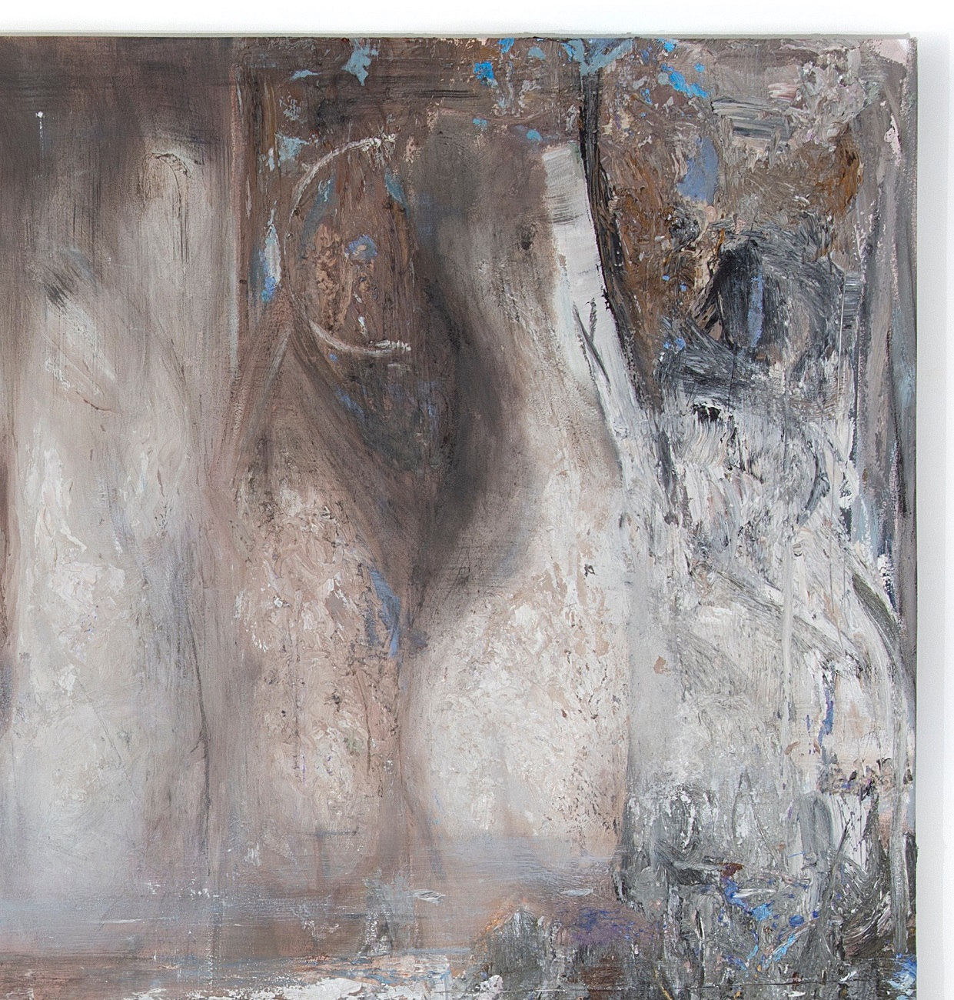

Gabriel Mills, DAFFODILS III 2021, oil on canvas, 96 × 108″">
Gabriel Mills, DAFFODILS III (detail) 2021, oil on canvas, 96 × 108″">
Gabriel Mills, DAFFODILS III (detail) 2021, oil on canvas, 96 × 108″">
Gabriel Mills, DAFFODILS III (detail) 2021, oil on canvas, 96 × 108″">
Gabriel Mills, DAFFODILS III (detail) 2021, oil on canvas, 96 × 108″">
Gabriel Mills, DAFFODILS VII 2021, oil on canvas, 96 × 108″">
Gabriel Mills, DAFFODILS VII (detail) 2021, oil on canvas, 96 × 108″">
Gabriel Mills, DAFFODILS VII (detail) 2021, oil on canvas, 96 × 108″">
Gabriel Mills, DAFFODILS VII (detail) 2021, oil on canvas, 96 × 108″">
Gabriel Mills (b.1992, New York)
Reality is a camouflage which humans have been compressed by, wrestle with, and attempt to peel back. A contemporary experience includes the challenge to embody the projection of
symbolic representation, which happens externally; to be made manifest to the liking of someone else’s prism.
Standing in a room of mirrors, I contemplated the possibility of being in that room without the
reflection of myself, with the mirrors refusing to show me who I am. Perhaps at that point a metamorphosis could spark within my spirit, and tell me, life is for you.
Early paintings of Christ present an impossible task that I find fascinating, and parallel to my inquiry, to depict something that is fully divine, and fully human at once. The problem creates unending possibilities, provides transportation into the subject, provides a portal for contemplation. The painting will always remain short of what it wants to depict.
However, like the mirror, there is potential for something to be captured in what cannot be reflected, or presented by material, a territory to be experienced non-perceptually. Each mark is a thought, and with each thought is a mark, both of which affirm my existence and reality. If nature is God’s metaphor for being, perhaps the future will say, painting is Gabriels metaphor for having existed.